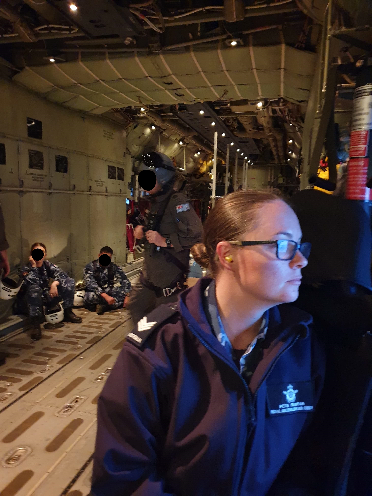

I have always felt overwhelmed by IT. Growing up in rural Australia armed with only with a typewriter did nothing for my development of fundamental knowledge, skills or appreciation. This didn’t happen until well after I left home. My classroom consisted of three outdated IBM computers with only Word, Excel, Solitaire and Minesweeper loaded. Regardless, my parents’ opinion was that I should not be completing assignments on the computer until I mastered them on paper first.
As I never got that computer from my parents, I will assume that I never mastered the paper version.
As ridiculous as that may sound, there are still pockets of our community where people have never experienced IT in a broad sense, nor have the funds available to stay connected on modern devices.
As an adult my experience with IT has been somewhat limited. Outside of working in an office-based setting and having a partner who was a gamer, I found the whole thing overwhelming. At work I knew what I had to do on my computer, so I did it. At home I had no idea what my partner was doing, so I avoided it. It was the vicious cycle of blocking and avoiding technology that has gotten me to where I am – a person who is quite the novice despite my relatively young age and professional status.
Over the last few years Defence has invested a large amount of time and resources to creating a proper data strategy. Department of Defence (2021) has identified that as the world is experiencing exponential growth in data creation and digitisation, they have begun to realise the potential exposures and conflicts that could come of it. With all the changes and improvements being made, I have come to realise that if I am to continue succeeding in this industry, I need to learn more about IT and data.

I researched opportunities for learning but many courses focused solely on programming and back-end development. I attended a few workshops run by She Codes and while informative, were not what I was looking for. My local TAFE ran several basic courses but I needed something that was going to be flexible and work around my business hours and parenting obligations.
I contacted Open Universities Australia and discussed my issues with the representative. We agreed that a Bachelor of IT through RMIT would be best suited to my requirements. These initial fundamental courses will give me a wonderful foundation on which to build, and as the course continues, so will my knowledge and skills.
By the time I have successfully completed the Bachelor of IT I hope to have the essential skills, knowledge and attitude required to be an effective contributor to Defence data discussions.